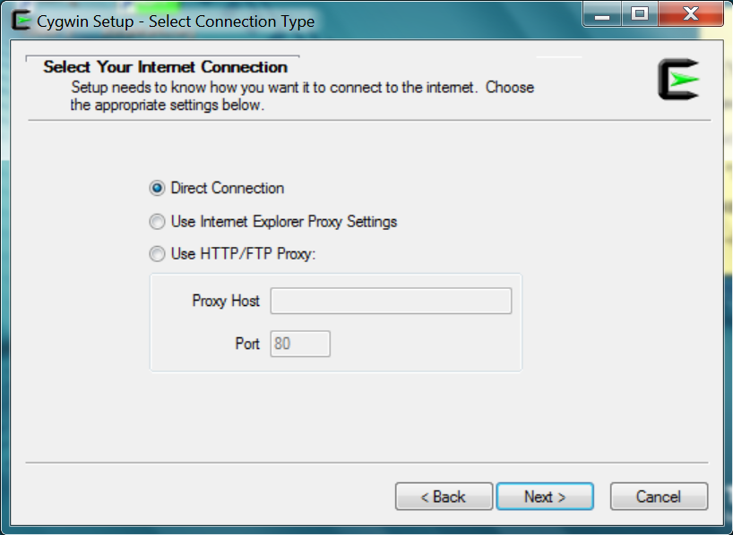

Installing Octave in Windows
The easiest way to install Octave in Windows is through Cygwin, a large collection of open source programs. Each program in the collection is packaged for easy installation and deinstallation. Cygwin has packages for mathematical tools like LaTeX, LyX, and R, and many generally useful tools, but we will stick to the minimum needed to run Octave.
Start by downloading a Cygwin installer: 32-bit Windows or 64-bit Windows. If you are unsure, try 64-bit -- if it doesn't work, then use 32-bit. Start the installer and follow the directions below. Mouse over the thumbnails on the left for step-by-step instructions and screen shots.

 64-bit (assuming you accepted the default install location):
64-bit (assuming you accepted the default install location):
64-bit (assuming you accepted the default install location):C:\\cygwin64\\bin\\mintty.exe /usr/bin/bash.exe -l -c \"/usr/bin/startwin.exe /usr/bin/octave --force-gui\"
32-bit (assuming you accepted the default install location):
C:\\cygwin\\bin\\mintty.exe /usr/bin/bash.exe -l -c \"/usr/bin/startwin.exe /usr/bin/octave --force-gui\"
");' />